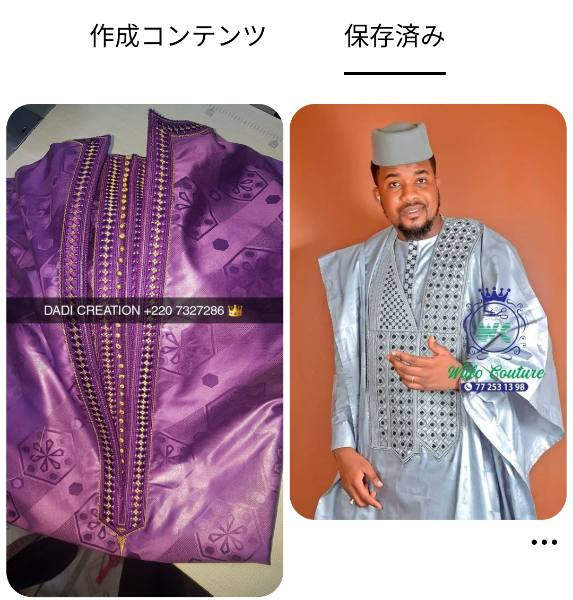

Pinterest：保存側ピン 968555463719890277
原掲載URL：https://www.pinterest.com/pin/968555463719890277/
datePublishedは当該ピンの公開日時。sharedContentは構造化データが示す参照先であり、写真の撮影日時ではない。
記録されたフィールド
{
"pin_id": "968555463719890277",
"structured_data": [
{
"@type": "SocialMediaPosting",
"headline": "Ceremonial Embroidered Agbada For Eid",
"datePublished": "2026-04-30T11:10:15.000Z",
"image": "https://i.pinimg.com/originals/2a/71/3a/2a713acabdbe3c825653acc94d0f5704.jpg",
"author": {
"@type": "Person",
"name": "Modou",
"alternateName": "boromngap",
"url": "https://www.pinterest.com/boromngap"
},
"sharedContent": {
"@type": "WebPage",
"headline": "Ceremonial Embroidered Agbada For Eid",
"url": "https://uk.pinterest.com/pin/ceremonial-embroidered-agbada-for-eid--42995371461782628/"
}
}
],
"pin_fields": [
{
"id": "968555463719890277",
"created_at": "Thu, 30 Apr 2026 11:10:15 +0000",
"is_repin": true,
"pinner": {
"id": "968555601019957621",
"username": "boromngap",
"full_name": "Modou"
}
}
]
}
参照HTMLのSHA-256：bb1e0e938b2147c73c55b43f677c208ece62c36415f09d3cda348a5313a2cc35